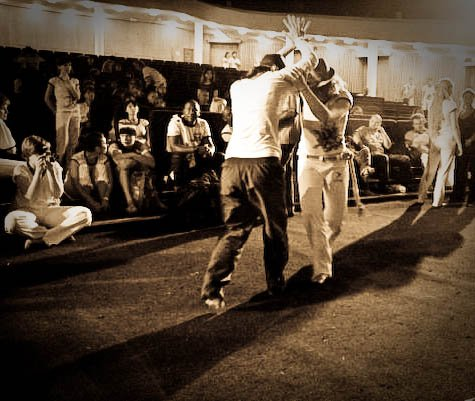

«Человек играющий»… капоэйру
Меня всегда радовало слово, которое бразильцы так точно подобрали к капоэйре — o Jogo — Игра.
И правда — назвать капоэйру боевым искусством — однобоко, танцем — наивно, миксом музыки, акробатики и боя — надоело уже. Зато существительное jogo и глагол jogar с капоэйрой соседствуют гармонично и естественно. Думаю, если бы ученый, культуролог и историк Йохан Хейзинга был знаком с капоэйрой, он бы упоминал ее через слово в своем трактате «Человек играющий» (Homo ludens). Мне было интересно сравнить некоторые его идеи об Игре в мировой культуре с идеями капоэйры. Возможно, вам тоже будет интересно. Всего лишь несколько цитат из первых глав, без комментариев. Всю книгу можно без проблем скачать или прочитать онлайн и составить свое мнение.
Йохан Хейзинга, отрывки из работы Homo ludens („Человек играющий“)

С давних пор я все более определенно шел к убеждению, что человеческая культура возникает и разворачивается в игре, как игра. Игра старше культуры, ибо понятие культуры, сколь неудовлетворительно его ни описывали бы, в любом случае предполагает человеческое сообщество, тогда как животные вовсе не дожидались появления человека, чтобы он научил их играть. Да, можно со всей решительностью заявить, что человеческая цивилизация не добавила никакого сколько-нибудь существенного признака в понятие игры вообще. Животные играют — точно так же, как люди. Все основные черты игры уже воплощены в играх животных. Стоит лишь понаблюдать, как резвятся щенята, чтобы в их веселой возне приметить все эти особенности. Они побуждают друг друга к игре посредством особого рода церемониала поз и движений. Они соблюдают правило не прокусить друг другу ухо. Они притворяются, что до крайности обозлены. И самое главное: все это они явно воспринимают как в высшей степени шуточное занятие и испытывают при этом огромное удовольствие. Щенячьи игры и шалости — лишь один из самых простых видов тех игр, которые бытуют среди животных. Есть у них игры и гораздо более высокие и изощренные по своему содержанию: подлинные состязания и великолепные представления для окружающих.
Многочисленные попытки определить биологическую функцию игры расходятся при этом весьма значительно. Одни полагали, что источник и основа игры могут быть сведены к высвобождению избыточной жизненной силы. По мнению
других, живое существо, играя, следует врожденному инстинкту подражания. Или удовлетворяет потребность в разрядке. Или нуждается в упражнениях на пороге серьезной деятельности, которой потребует от него жизнь. Или же игра учит его уметь себя ограничивать. Другие опять-таки ищут это начало во врожденной потребности что-то мочь, чему-то служить причиной, в стремлении к главенству или к соперничеству. Некоторые видят в игре невинное избавление от опасных влечений, необходимое восполнение односторонне направленной деятельности или
удовлетворение в некоей фикции желаний, невыполнимых в действительности, и тем самым — поддержание ощущения собственной индивидуальности. Все эти объяснения совпадают в исходном предположении, что игра осуществляется
ради чего-то иного, что она служит чисто биологической целесообразности.Вопреки любому из предлагаемых объяснений остается правомочным вопрос: «Хорошо, но в чем же, собственно, сама суть игры? Почему ребенок визжит от восторга? Почему игрок забывает себя от страсти? Почему спортивные состязания приводят в неистовство многотысячные толпы народа?» Накал игры не объяснить никаким биологическим анализом. Но именно в этом накале, в этой способности приводить в исступление состоит ее сущность, ее исконное свойство. Логика рассудка, казалось бы, говорит нам, что Природа могла бы дать своим отпрыскам
такие полезные функции, как высвобождение избыточной энергии, расслабление после затраты сил, приготовление к суровым требованиям жизни и компенсация неосуществленных желаний, всего-навсего в виде чисто механических упражнений и реакций. Но нет, она дала нам Игру, с ее напряжением, ее радостью, ее потехой.
Этот последний элемент, aardigheid [шуточность, забавность] игры, сопротивляется любому анализу, любой логической интерпретации.Существование игры не связано ни с какой-либо ступенью культуры, ни с какой-либо формой мировоззрения. Каждое мыслящее существо в состоянии тотчас же возыметь перед глазами эту реальность: игру, участие в игре — как нечто самостоятельное, самодовлеющее, даже если в его языке нет слова, обобщенно обозначающего это понятие. Игру нельзя отрицать.
Свойство быть прекрасной не присуще игре как таковой, однако она обнаруживает склонность сочетаться с теми или иными элементами прекрасного. Более примитивные формы игры изначально радостны и изящны. Красота движений человеческого тела находит в игре свое высочайшее выражение. В своих наиболее развитых формах игра пронизана ритмом и гармонией, этими благороднейшими проявлениями эстетической способности, дарованными человеку. Связи между красотой и игрою прочны и многообразны.
Всякая Игра есть прежде всего и в первую очередь свободное действие. Игра по
принуждению не может оставаться игрой.Ребенок или животное играют, ибо черпают в игре удовольствие, и в этом как раз и состоит их свобода.
Как бы то ни было, для человека взрослого и наделенного чувством ответственности игра — то, без чего он мог бы и обойтись. Игра — по сути, избыточна. Потребность играть становится настоятельной лишь постольку, поскольку она вытекает из доставляемого игрой удовольствия. Игру можно всегда отложить, она
может и вовсе не состояться. Она не бывает вызвана физической необходимостью и тем более моральной обязанностью. Она не есть какая-либо задача. Ей предаются в «свободное время». Но с превращением игры в одну из функций культуры понятия долженствования, задачи, обязанности, поначалу второстепенные, оказываются все
больше с ней связанными. Вот, следовательно, первый основной признак игры: она свободна, она есть
свобода. Непосредственно с этим связан второй ее признак. Игра не есть „обыденная“ или «настоящая» жизнь. Это выход из такой жизни в преходящую сферу деятельности с ее собственным устремлением. Уже ребенок
прекрасно знает, что он «ну просто так делает», что все это „ну просто, чтоб весело“.Она украшает жизнь, заполняет ее и как таковая делается необходимой. Она необходима индивидууму как биологическая функция, и она необходима обществу в силу заключенного в ней смысла, в силу своего
значения, своей выразительной ценности, а также духовных и социальных связей, которые она порождает, — короче говоря, как культурная функция. Она удовлетворяет идеалам индивидуального самовыражения — и общественной жизни. Она располагается в сфере более возвышенной, нежели строго биологическая сфера процесса пропитания — спаривания — самозащиты.Игра обособляется от обыденной жизни местом и продолжительностью. Еще один ее отличительный признак — замкнутость, отграниченность. Она «разыгрывается» в определенных границах места и времени. Ее течение и смысл заключены в ней самой. Игра начинается, и в определенный момент ей приходит конец. Она «разыгрывается». Пока она идет, в ней есть движение вперед и назад, чередование, очередность, завязка, развязка. С ее
временной ограниченностью непосредственно связано другое примечательное качество. Игра сразу же закрепляется как культурная форма. Однажды сыгранная, она остается в памяти как некое духовное творение или духовная ценность, передается от одних к другим и может быть повторена в любое время.Внутри игрового пространства господствует присущий только ему совершенный порядок. И вот сразу же — новое, еще более положительное свойство игры: она устанавливает порядок, она сама есть порядок. В этом несовершенном мире, в этой сумятице жизни она воплощает временное, ограниченное совершенство. Порядок,
устанавливаемый игрой, непреложен. Малейшее отклонение от него мешает игре, вторгается в ее самобытный характер, лишает ее собственной ценности. Эта глубоко внутренняя связь с идеей порядка и есть причина того, почему игра, как мы вскользь уже отметили выше, судя по всему, в столь значительной мере лежит в
области эстетического. Игра, говорили мы, склонна быть красивой. Этот эстетический фактор, быть может, есть не что иное, как навязчивое стремление к созданию упорядоченной формы, которое пронизывает игру во всех ее проявлениях.Игра связывает и освобождает. Она приковывает к себе. Она пленяет и зачаровывает. В ней есть те два благороднейших качества, которые человек способен замечать в вещах и которые сам может выразить: ритм и гармония.Среди характеристик, применимых к игре, было названо напряжение. Причем элемент
напряжения занимает здесь особенное и немаловажное место. Напряжение — свидетельство неуверенности, но и наличия шанса. В нем сказывается и стремление к расслаблению. Что-то „удается“ при определенном усилии.Напряжение игры подвергает силы игрока испытанию: его физические силы, упорство, изобретательность, мужество и выносливость, но вместе с тем и его духовные силы, поскольку он, обуреваемый пламенным желанием выиграть, вынужден держаться в предписываемых игрою рамках дозволенного.
Игровое сообщество обладает, вообще говоря, склонностью сохранять свой постоянный состав и после того, как игра уже кончилась. Разумеется, не каждая игра в камушки или партия в бридж ведет к возникновению клуба. И все же присущее участникам игры чувство, что они совместно пребывают в некоем исключительном положении, совместно делают одно важное дело, обособляясь от прочих и порывая с общими для всех нормами, простирает свои чары далеко за пределы продолжительности отдельной игры. Клуб приличествует игре, как голове – шляпа.
Игра — это борьба за что-то или показ этого что-то. Обе эти функции могут и объединяться, так что игра «показывает» борьбу за что-то или же превращается в состязание в том, кто именно сможет показать что-то лучше других. «Показывать», или „представлять“ означает, по самому происхождению этого слова, не что иное, как «ставить перед глазами». Это может быть простой показ перед зрителями чего-либо данного самой природой. Павлин или индейский петух показывают самкам свое роскошное оперение, но в этом показе уже заключается
предъявление чего-то на удивление особенного, необычного. Если же птица еще и выделывает при этом танцевальные па, то это уже представление, выход из обычной действительности, транспозиция этой действительности в более высокий порядок.Как только игра приносит с собой красоту, культура тотчас же обнаруживает в игре ее ценность. Однако же для становления культуры такого рода эстетическая ценность не является необходимой. Физические, интеллектуальные, моральные, духовные ценности в равной степени могут возвышать игру до уровня культуры. Чем больше способна игра повышать жизненный тонус кого-то одного или группы, тем глубже она входит в культуру.
Состязание, как и любую другую игру, до некоторой степени можно считать не имеющим никакой цели. Это означает, что оно протекает в себе самом и его результат никак не сказывается на необходимом жизненном процессе данной группы. Известная поговорка со всей ясностью выражает это словами: «дело не в шариках,
дело в самой игре», — то есть финальный элемент действия в первую очередь заключается в процессе как таковом, вне прямого отношения к тому, что за этим последует. Результат игры как объективный факт сам по себе незначителен и безразличен.„Ради чего“ — в этих словах, собственно, самым сжатым образом заключается сущность игры. Это «что» не есть, однако, материальный результат игрового действия, например, то, что мяч попал в лунку, но факт чисто идеального свойства: что в игре выпал успех или что вся она прошла на хорошем уровне.